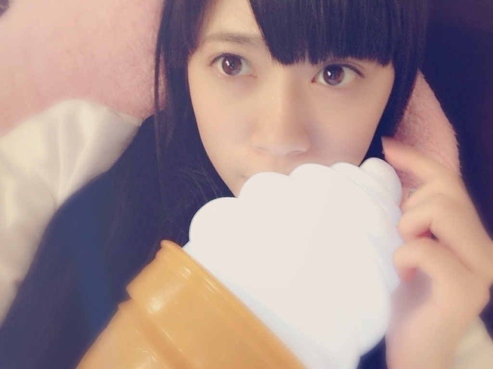

2015/0522FriＢの次
おはようございます
こんにちは
こんばんは
寺田蘭世です(､ﾝ､)
最近、どこでもどこまでも
１人で行くようになりました。
そこで今日はテラダの
１人で○○を
ご紹介します！
まずは、１人ショッピング
これは当たり前の事ですよね。
１人ショッピングは
お仕事終わり
池袋へ
小さなお店を1時間以上も
ちょこちょこしてまして
そしたら、店員さんが
声をかけて下さいました。
1人なのでもちろん無言で
たまに
独り言つぶやいてる
可能性もありますが、、、( ..)``
どうしようどうしようって
頭をフル回転させながら
お買い物してます
だから、店員さんが
声かけてくれるの
私は
嬉しい派なんですよ(´｡･o･｡｀)
ちなみに
皆さんはどういうスタイルで
お買い物しますか？
店員さんに
お客様ずいぶん
真剣に悩んでたので
声かけれませんでした
っと言われてしまいました、、、笑
私はそんなに
そんなに
自分の世界に
入ってしまっていたのか
店員さん申し訳なかったです( ..)``
優しい店員さん
ありがとうございました
いいお買い物が出来ました♪
池袋といえば
『アニメイト』さん
久々のアニメイトさんに
興奮
１人にやにやと
楽しい時間を過ごしました
この時ばかりは1人ですが
2000%ニヤニヤしてた自信が
あります( ..)``
恥ずかしい。
漫画を買って帰ろうと
したのですが重い&予算が、、、
黒崎くんの
言いなりになんてならない
4巻
大変素晴らしい！！！
オオカミ少女と黒王子も
大好きな漫画ですし(´｡･o･｡｀)
最近、この2作品を
何回も何回もリピートして
読んでます
アニメと言えば
うたのプリンスさまっ3期を
毎週の栄養チャージとして
生きておりますが
親に
うたプリみてるときの
蘭世みてると心配になるよって
(､ﾝ､)
確かになかなかの
テンションで観てますよ
1人で
実況？！しますから私は( ..)``
このテンションの私を見られたら
皆さんはどう思うんだろう、、、
なんか面白そう、、、
そして怖いです( ..)``
１人ディズニーへ○
これはちょっと
難易度高い方なのかな？！
皆さんは
1人ディズニーした事ありますか？
なかなか楽しかったですよ
写真は撮ってもらいました。
ランプとツーショットで
また、1人ディズニーしたいです。
でも1人だと
アトラクション乗る時とかに
ちょっぴり
寂しくなっちゃいます。
ご一緒してくれる方いますか( ..)``
自撮りお写真を
この日は風がとても強かった
なんか風が強く吹くと
ちょっぴり
寂しい気持ちになります。
↑風が強いよーの図
お返事○
○蝉っていい鳴き声だよね！
夏って感じ。
みーんみんみんみーみんみーみんみーみん
みーんみんみんみーみんみーみんみーみん
→みんみんみんみんみん
私は今年はまだ
蝉さんにはお会いしてません、、、
夏ですね( ..)``
○今週から資格の
勉強をはじめました！
握手会をモチベーションに
頑張ってます笑笑
少しは頑張らんとね笑笑
→おお！頑張れ！！！
テラダもパワーになるか分かりませんが応援してます(´｡･o･｡｀)
モチベーションって
大事ですよね
資格受かったよって報告
待ってますね！
○ブログ更新ありがとー
プリンシパルのブログ読んだよ、
あの頃は蘭世のこと
あまりよく知らなかったけど、
こんなことあったんだね...
でも、こういう経験があるから
強くなれると思う！
あと、蘭世の
ぷく顔
めっちゃかわいい^o^
12thも頑張ってね(､ﾝ､)
→ありがとうございます！
これからも
宜しくお願い致します！！
ぷくーーー( ..)``
可愛い頂きました、、、
嬉しいです
○とまらんぜえええええええええ♡
→ありがとう！！！！！！！！！！！とまらんぜっ
○蘭世には
蘭世にしかない色がある！
→なんか、凄くいいお言葉
頂きました(´｡･o･｡｀)！！
○プク顏かわゆす！
らんぜさん！
実は今日会社様から
内定をいただきました！
でもまだ就活は続けていくけど、
気持ち的にだいぶ余裕が持てた！
らんぜも頑張ってねー！
ではまた。
→わぁー！
おめでとうございます
気持ち的にも
余裕がでてきた
すごくいい事だと思います
緊張し過ぎもよくないので！
程よく肩の力抜いて
一緒に頑張りましょうね♪
○らんぜこんばんわ
もうすぐ中間考査が
あります。
高校で初めてのテストなので
緊張しています。
良かったら
応援してください。
いつも応援しています。
→テスト勉強で
忙しいだろうに、、、
コメントありがとうございます！
リラックスして！！
お勉強沢山頑張ってくださいね
○以前の蘭世さんのことも
まだ知識が浅かったもので、
今回のブログを受けて
2014年6月17日のブログ
読ませていただきました
心揺さぶられるようでした
なかなか言葉にするのは
難しいんですが
きっと、
破していけると
大丈夫だと思います
自分のように
これからもたくさんの、
本当に大勢の人が
蘭世さんの素敵さに
気付いていくことと思います
これからも蘭世さんらしく
駆け抜けていくこと
期待しています
らんぜのいきおい、
とまらんぜ！！！
→本当に、ありがとうございます！！
こう言ってくださる方が
1人でも居てくださって
テラダ凄く凄く嬉しいです！
今こうして知って頂けて
よかった( ..)``
これからも宜しくお願い致します！
○緊張をおさえる方法を
→私は、自分の心臓の鼓動を
感じるとなんか緊張するんですが
気合が入ります、、、
あと、深呼吸
あとあとライブの前私はよく
ガムを噛んで
宝塚の動画見て
ストレッチしながら
集中力高めてます
これをするとライブが始まるなって
気持ちになります！
ガムは海外の野球選手が
試合中噛んでるのを見て
集中力が高まるのかなーって
真似してみました、、、笑
宝塚をみるのは
テンションが
上がるのはもちろんなのですが
私も今から
ステージにたって
お客様に
元気を届ける立場に
なるんだって
宝塚をみて
ファンの皆様に
幸せな時間を届けるぞーーっと
いう気持ちを
再確認するタイムです！
おまけ○
モバメでも話題になりました
ソフトクリームライト
この白い部分がひかるんです！

なかなか大きめのライトで
もっと小さかったら
周りの方の視界の妨げにならず
ライブとかでも振れたのかなっと
次回のブログ
乃木のの
のぎびんご
その他いろいろ
書きます( ..)``
最後まで読んで下さり
ありがとうございました！
2015/05/22 14:48


コメント(513)
とまらんぜ！
たまらんぜ！！！
メールたくさんありがとう！
ぷく顔可愛かったよ！
蘭世可愛い＼(^o^)／
長文ブログありがとう！お疲れ様^_^
どうもバスケットマンです！
ブログ更新ありがとー！
٩(◦`꒳´◦)۶
また後でコメントするねー
٩(◦`꒳´◦)۶
誕生日近いからかな！？
一人で買い物いけるんや（笑）偉いなww
おれも一人でアニメイトいったことある（笑）
いつからんぜといってみたい！！
らんぜは、ランドとシーで好きなアトラクションってなに？
のぎびんご可愛かったよーー
画像が全部かわいすぎる（笑）
1人ショッピングはいける！（＾Ｏ＾）
1人ディズニーすごいww行ってみたいけど！
明後日やね………ぷく顏選抜発表！
やはり、選抜入りしたいかね？
おっと！それもあるけど、握手会！
またまた少なめですが、構ってくださいm(_ _)m
最近のモバメでのプク顔可愛いのばっかりでニヤニヤしてました٩(๑❛ᴗ❛๑)۶
一人買い物とかは普通だけど一人ディズニー出来る蘭世はなかなかのツワモノですな⁽⁽(ཀ д ཀ)⁾⁾้
アニメの話もしたいんだけど俺が見てるのと系統が違いすぎてwww
また握手しに行くね(o^^o)
24日は行くからよろしくね〜。
テストのときに緊張してしまうので、今度はテスト前ガム噛んで集中します！
ひとりで都内にぶらぶらしにいったり、電車のるのすき！
おすすめの電車とかカフェありますか？
Bの次？C！ディズニ…やめときます（笑）
なんか、俺らしからぬテンションになりそうだったんで（笑）
買い物は俺も1人派だな〜自分のペースで好きに回りたいし、気を遣うのもめんどいから、基本1人！
店員には話しかけられたくないタイプの人間です（笑）
だから、基本イヤホンつけて、曲聞きながら見てるかな〜
声かけられても、会釈だけして回るかな〜
1人ディズニーはなかなかの勇者（笑）
千葉県民だから、行こうと思えばすぐ行けるけど、飽きたから1人では行かないかな〜（笑）
店員に声かけられたい派なんだね
何買ったんだろ？
1人ディズニーは難易度MAXだよ笑
俺今年からラグビースクールのコーチになって中学生教えてるんだけど蘭世にエールもらいたい（≧∇≦）
お願いします！
今日で、テストが終わりました！前のブログのコメントにも書いたとおり、土曜日にフットサルの大会があったので、ぜんぜん勉強ができず、今までで一番自信がありませんwでも、まだ一学期の中間テストなんで...期末テストでばんかいすれば大丈夫...なはず！ (ポジティブ)
こんにちは
こんばんは
今蘭世のモバメ、ブログを見ながら退屈な授業を乗り切ってます（笑）
俺は買い物するときは絶対1人じゃ無理かなー
1人ディズニーなんか難題過ぎて絶対無理（笑）
誰かいないと寂しくて何にもできないんだよね
純奈と同じタイプかな（笑）
蘭世とディズニー行きたいなー(*ﾟ▽ﾟ)ﾉ
蘭世と行ったら豆知識的なものとか教えてもらえてすげー楽しそう！
12th三次応募も蘭世の握手券ちゃんととったよ～今から蘭世に会えるの楽しみに学校頑張ります（笑）
すごく盛りだくさんの内容のブログありがとう
あ、あと、個別握手会の完売の部が早くも2次で出たねー。やっぱりどんどん魅力が浸透してきてるんじゃなーい？
まさに、
蘭世の勢い、
とまーーーーー、
らんぜーーー！！！
だね
おはよう、
一人ディズニーはなかなかレベル高くないか？(笑
次の更新待ってる、
たぶん。
僕も1人行動めっちゃ好き！
1人ショッピングは基本中の基本だよね笑
おととい握手会に着ていく服買いに行ったよー
休みの日に一緒に遊びに行くぐらいめっちゃ仲いい店員さんがいてね、試着してその人と一緒に決めてるんだ！
今度着ていくの楽しみ！
1人ディズニーはしたことないな、、、
1人USJは行ったことあるけどね笑
シングルライダーのおかげでめっちゃ待ち時間短いよね！
らんぜちゃんがいいならぜひぜひご一緒したいです( ..)``笑
海外の野球選手の中にはひまわりの種噛んでる人もいるんだよ！
硬いけど弾力あるから噛みやすいんだって！
らんぜちゃんも試してみてね笑
次回のブログも楽しみにしてるねー！( ´ ▽ ` )ﾉ
俺も一人ショッピングは当たり前だね、でもイヤホンをつけてることが多いから話しかけるなオーラまんさいなんよね（笑）さすがに一人ディズニーはキツイよね~人目が気になりすぎて…よかったらご一緒しますよ（笑）
うたプリを見てる蘭世ちゃも見てみたい(￣▽￣)
てか質問なんですけど、うたプリっていつやってるの？見たことないから見てみたいけど…
では✋またの更新待ってます。
今年は受験や部活の引退試合などいろいろ大変で握手会に行けるかわからないですけど…
なるべく行けるように頑張ります！
蘭世も12th頑張って、そして…
13thで選抜入りを蘭世推し皆で頑張りましょう！
陰ながら応援してます！
また、握手会行ったときはよろしくお願いします！
頑張ってね！応援してます！٩( 'ω' )و
らんぜの勢いとまらんぜぇぇぇぇぇぇぇぇぇぇ！
何分かすると店員さんに声かけられて
選ぶ時に参考になる！
独り言ぶつぶつゆってるらんぜ見てみたい笑
俺も割と独り言ゆう方なんだよね〜笑
それにしても1人ディズニーはレベル高い！w
俺には無理だ。笑
ぷく顔選抜の結果がどうであれ、蘭世のぷく顔大好きだぞー(´｡･o･｡｀)
1人ディズニーはすごい(∩´﹏`∩)
流石に無理だあ！
らんぜにはいつも元気もらってます！
だいすき！
くるちゅん。
呼んだだけー！！！
俺物語にはまってます(≧ω≦)
やっほー蘭世。
一人ディズニーとかなかなか凄い
行動力だね。笑
ぷく顔たくさんかわいかったよ～
ありがとね。
乃木のの呼んでいただけたんだね！
楽しみにしてます！
僕は次の握手名古屋なんで
今週末の握手はいないから
乃木ののまったりきいてるね
うたプリ見てはしゃいでる蘭世とか絶対可愛いやん！
俺もアニメ好きやからいつか握手会のときアニメのことで一緒に盛り上がれたらいいなぁ。
歳をとればとるほどどんどん多くなって…＿|￣|○
良いパートナー見つかるのがイイよね❗️
グラッチェ⚽︎⚽︎⚽︎⚽︎⚽︎⚽︎
一人ディズニーはなかなかのもんですなぁ•••
私は一人では何も出来ない 残念な男です(*_*)
本当に可愛いね〜〜(^○^)
応援してるよー頑張ってねー
頑張れらんぜ〜
らんぜお疲れ様！
らんぜがこのコメント読むのはこんばんはの時間と予想(^^)/
とりあえずブログ上がったのでコメントしなければと、、、
という思いできました
何が言いたいかと言うと
また後でコメントしにきますということです笑
ならコメントするなよって話ですよね、そうですよね
でも早くコメントしたい思いがおさえきれず、、、笑
また後程笑
とまらんぜーーーーーーーーー(((o(*ﾟ▽ﾟ*)o)))
僕も最近になって1人で買い物とか色々1人で行くことが多くなったよ！ぼくも店員さんとよく喋る派だよー！すぐ試着とかしちゃって、買わなきゃいけなくなるみたいなことが多い、、、笑
でも、さすがに1人ディズニーは行ったことないなー(ｰ ｰ;)
女の子だから大丈夫なんだろーなー、、、
うたプリ見てテンション上がってるらんぜみてみたい笑笑
真夏のツアー千秋楽いくから！全力で応援します！
うちわ作ろうか悩んでる、、、作ったらよろこんでくれるかな？(ｰ ｰ;)
こんにちは
こんばんは( •̀∀•́ )✧
学校帰りにブログ読んでるよ〜！
至福の時間をありがとうございます！
１人カラオケはよくやる！！w
１人だと気楽でいいよね٩(*´꒳`*)۶
最近は行ってないけどw
乃木のの楽しみにしてるね！
またコメントします(´｡･o･｡｀)
1人で◯◯、買い物もディズニーも自分がしたいようにできるのがいいね。
僕の1人で◯◯は、1人で海外旅行かなぁ。
10日間くらい、1人で彷徨っています。
オススメはウィーンです。
大好きな街で、7回くらい行ったので、案内できるよ。
宝塚のエリザベート、蘭世ちゃんがトート閣下のコスプレ見て、どこかで見たことあるなと思ってた。
この前、エリザベートのDVD買って、その答えがわかったよ。
昔ウィーンで見た。
エンディングが違ってたけど、宝塚を見て、こういう話だったのかと納得。
ドイツ語だったので、よく分からないまま見てました。
最近行って良かった国は、フィンランドです。
全国ツアー、広島３公演と神宮千秋楽が当たったよ。
ええ、1人で参加しますとも。
でも楽しみ。
握手会完売してたね。
僕もその日ちょっとだけ買ってます。
こんなに早く完売するとは。
まさに勢いとまらんぜだね〜。
ぷく顔選抜の結果がどうであれ、蘭世のぷく顔大好きだぞー(´｡･o･｡｀)
コメントする